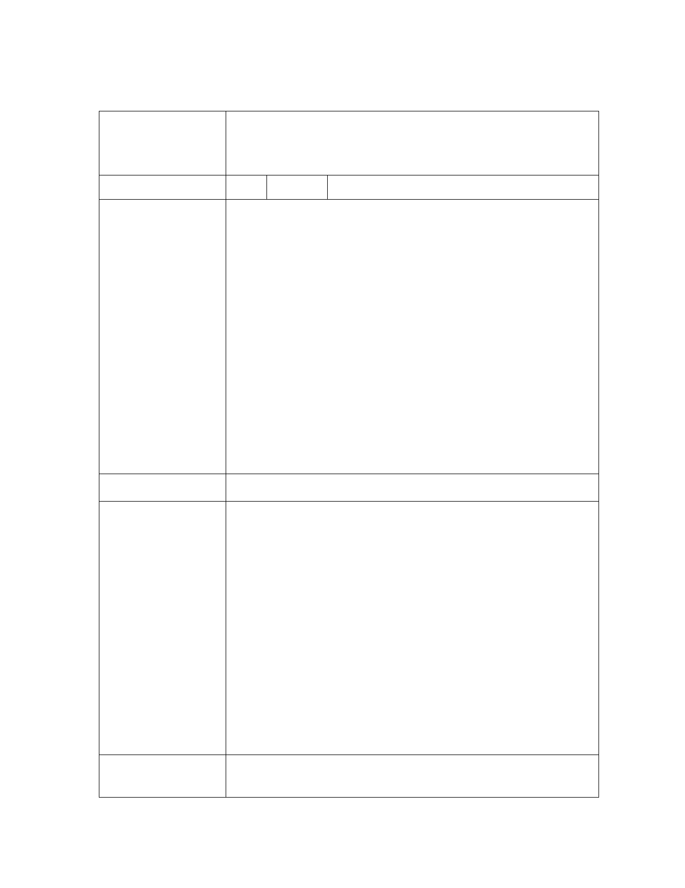

臺北市都市計畫委員會公民或團體所提意見綜理表
「變更臺北市文山區老泉段三小段358地號等5筆土地保護區為文化
案 名 景觀保存區主要計畫案」暨「擬定臺北市文山區『優人神鼓山上劇
場』文化景觀保存區細部計畫案」
編 號 1 陳情人 財政部國有財產署北區分署
有關市府公告公開展覽「變更臺北市文山區老泉段三小段 358 地號
等 5 筆土地保護區為文化景觀保存區主要計畫案」暨「擬定臺北市
文山區『優人神鼓山上劇場』文化景觀保存區細部計畫案」之計畫
書圖意見，詳下說明：
1. 涉及本局經管臺北市文山區老泉段三小段 364 地號國有土地(部
分)，土地使用分區由「保護區」變更為「文化景觀保存區」，本
陳 情 理 由 處原則同意在不負擔任何回饋前提下配合辦理都市計畫變更。
2. 至前述 364 地號部分國有土地剩餘未劃入本計畫案範圍部份，依
案附主要計畫書第 9 頁圖四-德高嶺步道地形測量圖所載，係屬
登山步道供「優人表演藝術劇團」出入使用，且毗鄰本案申請之
私有地，為利國有土地整體使用效益，爰建議將該筆地號國有土
地整筆納入本計畫案範圍及秉權審核本案國有土地是否符合文
化創意產業發展法第 22 條規定。
建 議 辦 法 同陳情理由。
1.敬悉。
2.建議不予採納，理由：
(1)山上劇場係使用德高嶺步道銜接春琦產業道路做為出入通
路，有關本市老泉段三小段 364 地號未納入本計畫變更之國
有土地(約 98 ㎡)，為待老坑步道系統之一部分，往東銜接新
市府回覆
北市新店區之登山步道系統，非屬出入通路使用範圍，如無
意 見 使用需求，建議不予納入。
(2)364 地號部分(約 163 ㎡)納入係避免該國有土地橫貫穿越分
割優人神鼓山上劇場為二宗土地及考量山上劇場整體利用需
求而劃設。
(3)計畫範圍內之公有土地是否符合文創法第 22 條規定部分，將
俟本計畫公告實施後，循相關規定程序認定。
專 案 小 組 審 查 財政部國有財產署經管之文山區老泉段三小段 364 地號部分國有
意 見 土地，應納入本計畫範圍。
第 - 17 - 頁，共 31 頁